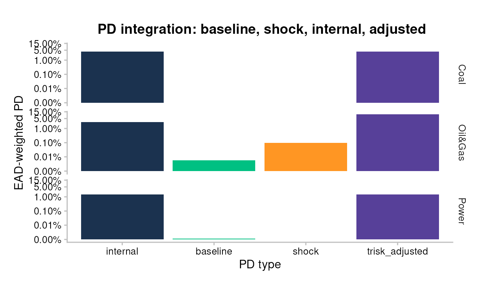
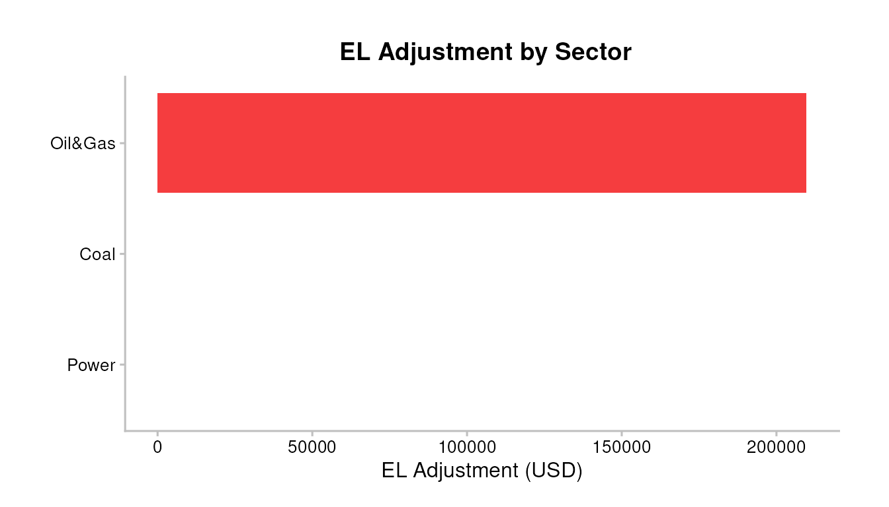
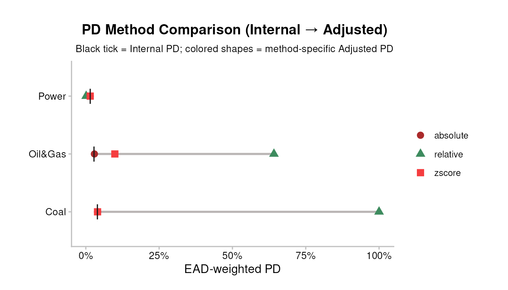

Why this vignette
The pd-el-integration vignette walks the methodology end
to end: every step, every formula, the full bank-risk story. This one is
the visual reference. Each section covers one plot or
table: what it shows, what to look at first, common misreads, and when
to reach for it instead of the others.
For the maths — Z-score method, EAD-weighting, Basel IRB alignment,
EL sign convention — see pd-el-integration.Rmd.
The seven artefacts:
| Tag | Function | Family |
|---|---|---|
| P1 | pipeline_crispy_pd_integration_bars() |
PD level |
| P2 | pipeline_crispy_el_adjustment_bars() |
EL delta |
| P3a | pipeline_crispy_pd_kpi_table() |
KPI summary |
| P3b | pipeline_crispy_el_kpi_table() |
KPI summary |
| P4 | pipeline_crispy_el_sector_breakdown_table() |
Sector breakdown |
| N1 | pipeline_crispy_pd_method_comparison() |
Method choice |
| N2 | pipeline_crispy_pd_waterfall() |
PD decomposition |
Setup (bundled testdata)
assets_testdata <- read.csv(system.file("testdata", "assets_testdata.csv", package = "trisk.model"))
scenarios_testdata <- read.csv(system.file("testdata", "scenarios_testdata.csv", package = "trisk.model"))
fin_testdata <- read.csv(system.file("testdata", "financial_features_testdata.csv", package = "trisk.model"))
carbon_testdata <- read.csv(system.file("testdata", "ngfs_carbon_price_testdata.csv", package = "trisk.model"))
portfolio_ids_internal_pd <- read.csv(system.file("testdata", "portfolio_ids_internal_pd_testdata.csv",
package = "trisk.analysis"))
analysis_data <- run_trisk_on_portfolio(
assets_data = assets_testdata,
scenarios_data = scenarios_testdata,
financial_data = fin_testdata,
carbon_data = carbon_testdata,
portfolio_data = portfolio_ids_internal_pd,
baseline_scenario = "NGFS2023GCAM_CP",
target_scenario = "NGFS2023GCAM_NZ2050"
)
#> -- Start Trisk-- Retyping Dataframes.
#> -- Processing Assets and Scenarios.
#> -- Transforming to Trisk model input.
#> -- Calculating baseline, target, and shock trajectories.
#> -- Applying zero-trajectory logic to production trajectories.
#> -- Calculating net profits.
#> Joining with `by = join_by(asset_id, company_id, sector, technology)`
#> -- Calculating market risk.
#> -- Calculating credit risk.
internal_pd_lookup <- portfolio_ids_internal_pd[, c("company_id", "internal_pd")]
# Z-score is the default integration method; used for all PD plots below.
result_zs <- integrate_pd(analysis_data, internal_pd = internal_pd_lookup)
# EL pipeline needs derived columns + an internal EL lookup.
analysis_data_el <- compute_analysis_metrics(analysis_data)
internal_el_lookup <- merge(
analysis_data_el[, c("company_id", "exposure_value_usd", "loss_given_default")],
internal_pd_lookup,
by = "company_id"
)
internal_el_lookup$internal_el <-
internal_el_lookup$exposure_value_usd *
internal_el_lookup$loss_given_default *
internal_el_lookup$internal_pd
result_el <- integrate_el(analysis_data_el,
internal_el = internal_el_lookup[, c("company_id", "internal_el")])P1 — PD integration bars
Four bars per facet group: Internal PD (the bank’s own number), TRISK Baseline PD (no shock), TRISK Shock PD (with the transition shock), and TRISK-Adjusted PD (Internal moved by the TRISK delta). The first thing to look at is the gap between Internal and TRISK-Adjusted — that’s how much your number changes once climate is layered in. The TRISK Baseline and Shock bars sit alongside for context: they tell you where the model itself moved, which is what the integration method translates into a shift on your internal number.
pipeline_crispy_pd_integration_bars(result_zs)
When to use. First plot to show a bank counterparty. Answers “what happens to my PDs if I integrate TRISK?” at sector resolution. Switch to
granularity = "firm"when sector aggregation hides material within-sector heterogeneity (sparse portfolios where a few firms drive everything). Usescale = "pseudo_log"if Merton underflow leaves baseline PDs near zero and linear scaling collapses everything against the axis.
P2 — EL adjustment bars
Horizontal bars per sector showing the signed EL delta: TRISK-Adjusted EL minus Internal EL. Red bars (positive) mean integration says you should expect more loss than your own model predicted; green bars (negative) mean less loss. The EL levels themselves aren’t on this plot — only the adjustment — so this is the right view when the conversation is “how much does integration change my numbers” rather than “what are the absolute levels.”
pipeline_crispy_el_adjustment_bars(result_el)
When to use. When the question is sign and magnitude of integration impact on EL by sector — “where does TRISK think you’re under-reserving?” Pair with P4 (sector breakdown) to show levels and direction together.
P3a — PD KPI table
One-row summary of the PD integration: portfolio Internal PD, portfolio TRISK-Adjusted PD, the delta, and direction. The number on the right is what goes into a one-page memo or an executive deck.
pipeline_crispy_pd_kpi_table(result_zs$aggregate)| Total Exposure (USD) | Weighted Internal PD | Weighted Adjusted PD | Weighted PD Adjustment (pp) | Adjustment % |
|---|---|---|---|---|
| 21.06M | 2.592% | 4.461% | +1.868 pp | 72.077% |
When to use. Top of a report or first slide of a deck. Strips out every sector and firm — useful when the question is portfolio-level only. Don’t use as the only PD view in a methodology document: it hides every dimension the integration cares about (sector, firm, method).
P3b — EL KPI table
One-row summary of the EL integration, including the bps
metric (EL / EAD, expressed in basis points). The
bps number is the line that travels best across audiences — it’s
scale-free, directly comparable to risk appetite limits, and the same
unit regulators use for IRB capital math.
pipeline_crispy_el_kpi_table(result_el$aggregate)| Total Exposure (USD) | Total Internal EL | Total Adjusted EL | EL Adjustment | Adjusted EL (bps) |
|---|---|---|---|---|
| 21.06M | 318.1K | 527.8K | 209.7K | 250.6 bps |
When to use. Same as P3a but for EL. If you only have room for one headline number per side, the bps delta is the best candidate — it compresses absolute level, exposure, and integration impact into one figure.
P4 — EL sector breakdown table
The portfolio breakdown that sits between P2 (deltas only) and P3b (one number). Each row is a sector with: exposure, internal EL, TRISK-adjusted EL, delta, direction arrow, and EL/EAD in bps. Reading top to bottom tells you which sectors carry the integration story.
pipeline_crispy_el_sector_breakdown_table(result_el$portfolio)| sector | Direction | Count | Exposure | Internal EL | Adjusted EL | EL Adjustment | EL/EAD (bps) |
|---|---|---|---|---|---|---|---|
| Coal |
|
1 | 6.23M | 174.4K | 174.4K | 0.00 | 280.0 bps |
| Oil&Gas | ↑ | 2 | 5.57M | 88.1K | 297.8K | 209.7K | 534.9 bps |
| Power |
|
1 | 9.26M | 55.6K | 55.6K | 0.00 | 60.0 bps |
When to use. The reference table for any EL-focused discussion. Shows levels and direction together — P2 only shows deltas, P3b collapses sectors. The bps column makes sectors with very different exposure magnitudes directly comparable.
N1 — PD method comparison
The three integration methods ("absolute",
"relative", "zscore") overlaid on the same
input. The Internal PD shows as a tick; each method’s TRISK-adjusted PD
shows as a coloured shape on the same row. Wide spread between method
shapes means the bank’s choice of integration method moves the number a
lot — narrow spread means it doesn’t matter which method you pick, the
integration tells the same story.
pipeline_crispy_pd_method_comparison(analysis_data,
internal_pd = internal_pd_lookup)
When to use. When the methodology choice is on the table — internal committee review, regulator pushback on method selection, or before committing to a single method for a client engagement. If the three shapes sit on top of each other, picking a method is a non-decision; if they spread, that’s a real call that needs justification.
Like P1, this plot exposes
granularity = "firm"andscale = "pseudo_log"for sparse portfolios with near-zero baseline PDs.
N2 — PD waterfall
Per-sector decomposition: Internal PD → signed Adjustment → Adjusted PD. The middle bar’s sign and fill make the integration impact unmissable: red means the adjustment worsens risk, green means it improves it. Reading left to right gives the magnitude story at a glance — useful when the audience needs the “before, change, after” structure rather than four separate bars.
pipeline_crispy_pd_waterfall(result_zs)
When to use. When P1’s four-bar grouped layout is too dense for the audience — non-quantitative stakeholders read waterfalls faster than grouped bars. Also the default choice when the message is “this is how much integration moves PD” rather than “here are the four reference levels.” Pair P1 + N2 when both questions are in scope.
How they fit together
A typical reading order for a bank-facing report:
- P3a + P3b — headline numbers, one slide.
- N2 (PD waterfall) and P2 (EL adjustment) — the change story.
- P1 and P4 — full reference levels, sector by sector.
- N1 — only if the methodology choice is being questioned.
For deeper math, every chart cross-references back to pd-el-integration.Rmd
section by section.